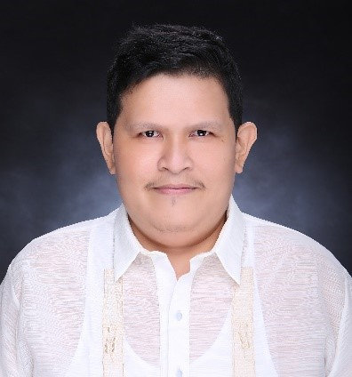
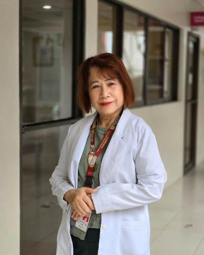
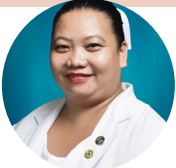
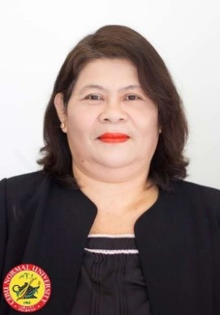

CITU - Journal of Health Research
Volume 1 - 2025
Editorial Board
Editor in Chief

Dr. Lloyd Matthew C. Derasin
Cebu Institute of Technology
Managing Editor

Mr. Jason Lim
Cebu Institute of Technology - University
Associate Editors
Mr. Lloyd Vincent C. Derasin
Cebu Normal University
Prof. Marvin S. Canque
Cebu Technological University

Dr. Grace C. Arcamo
Cebu Institute of Technology University

Dr. Lovelyn G. Tipon
Assistant Professor 4, Cebu Normal University
Dr. Jose Mari Louis G. Alforque
Professor 2, Cebu Normal University
Reviewers
Dr. Reynaldo V. Moral
Assistant Professor 1 – Cebu Normal University

Dr. Carmel Vip C. Derasin
Professor 4, Cebu Normal University
Dr. Rhona Marie Caingles-Noquiao
Instructor, Cebu Normal University